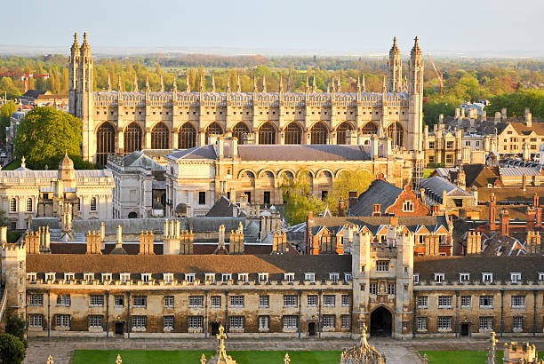
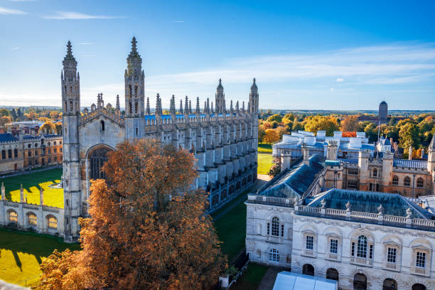

Bringing together world-class expertise in sports, technology, and innovation
Joseph Keady at Cambridge University
Growth mindset. Entrepreneurial mindset. A futurist building the next era of sport.
Driven by a passion for science and technology, Joseph founded Faster Future Sports, a sports innovation consultancy. He is focused on leading innovation, fostering collaboration, and driving growth within sport by leveraging cutting-edge technology and scientific advancements.
From Cambridge, he is building the platform that connects research, technology and entrepreneurship — turning emerging science into real-world performance.
Sports Innovation Ecosystem in Cambridge
Core Technology Domains
Cambridge Vision Horizon
Faster Future Sports is proudly based in Cambridge, one of the world's premier innovation ecosystems. The city's unique combination of world-leading research institutions, entrepreneurial culture, and collaborative spirit creates the perfect environment for sports innovation.
Our location enables direct access to cutting-edge research, top-tier talent, and a network of successful entrepreneurs and investors who understand the journey from laboratory to market.


The team translating research, technology, and entrepreneurship into the future of sport
Chief Operating Officer
I'm the COO of Faster Future Sports, a venture focused on building a sports innovation ecosystem that brings together research, technology and entrepreneurship — creating the conditions where new ideas in sport move quickly from experimentation to real-world impact.
As COO, I focus on translating the concept into structure: developing partnerships, coordinating operations, and building the networks required to grow a sustainable innovation platform across universities, startups, researchers and industry partners.
I'm always happy to connect with people across the FFS ecosystem — researchers, founders, technologists, investors and sports organisations interested in the future of innovation in sport.
Connect on LinkedIn →Technical Lead
I build AI systems that actually work — and help organisations figure out where AI is worth their time. Based in Cambridge, working full-time at the frontier of AI product development, with a background spanning software engineering, machine learning, and technical leadership.
At Faster Future Sports I lead the technical build, where I designed an AI-powered Digital Twin platform for elite racehorse performance monitoring from scratch — from real-time sensor pipelines and ML model design to Azure infrastructure, React dashboards, and the IP strategy underneath it all.
Previously I founded SenseBridge, an assistive-tech startup that won £15k in seed funding and put a real-time audio ML pipeline in the hands of 200+ mobile users. My work spans AI strategy, hands-on product development (RAG systems, agentic pipelines, full-stack builds), sports and performance tech, and fractional CTO work for early-stage teams.
Connect on LinkedIn →Join the Founding Team
We're building a world-class team to translate research into real-world performance. If you work in technology, sports science, or venture building, we'd love to hear from you.
Get in TouchWe are building an advisory network across sport, academia, biotech, and venture
Faster Future Sports is convening advisors from Cambridge's research institutions, clubs, and deep-tech community to guide our work across our six technology domains. We're actively expanding this network.
Become an AdvisorWe're building a world-class team to revolutionize sports innovation. If you're passionate about sports, technology, and making a real impact, we want to hear from you.